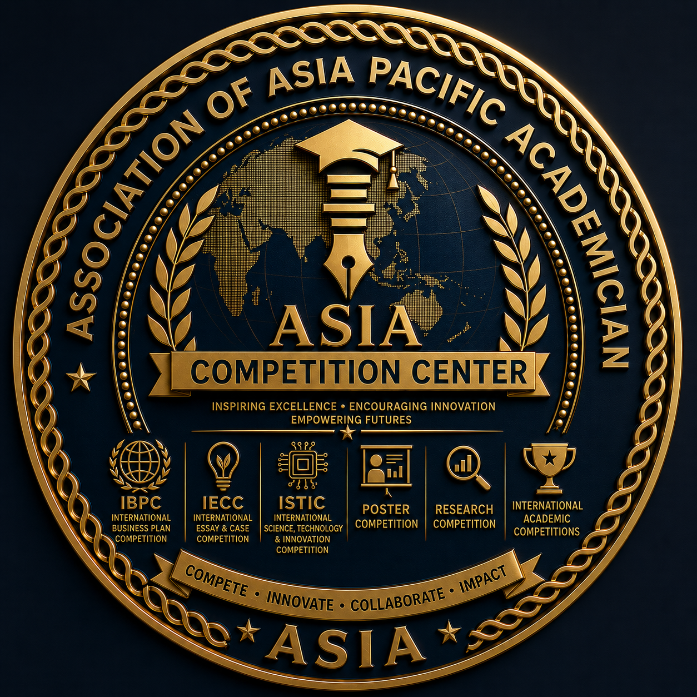

ASIA Competition Center
Compete. Innovate. Excel.
The ASIA Competition Center (ASIA-CC) is the official competition, talent development, and innovation platform of the Association of Asia Pacific Academician (ASIA). It serves as the strategic center for designing, organizing, managing, and expanding multidisciplinary academic, professional, research, business, technology, innovation, and creative competitions across the Asia-Pacific region and beyond.
ASIA-CC brings together students, academics, researchers, professionals, entrepreneurs, innovators, educational institutions, industries, and international partners in a competitive ecosystem that promotes excellence, creativity, collaboration, ethical competition, and continuous professional growth.
Beyond organizing competitions, ASIA-CC is dedicated to discovering outstanding talent, nurturing future leaders, encouraging innovation, and building internationally competitive human capital capable of addressing global challenges through knowledge, creativity, and responsible leadership.
As one of the strategic bodies of ASIA, ASIA-CC transforms competition into a comprehensive learning experience where participants strengthen competencies, expand international networks, and contribute meaningful solutions to society.
"To become the leading multidisciplinary competition and talent development center in the Asia-Pacific region, inspiring excellence, innovation, creativity, and global competitiveness through internationally recognized competition platforms."
ASIA-CC is committed to:
Encouraging individuals and institutions to achieve the highest standards of academic, professional, technological, and entrepreneurial excellence.
Identifying and developing outstanding students, researchers, innovators, entrepreneurs, educators, and professionals with exceptional potential.
Strengthening analytical thinking, creativity, leadership, teamwork, communication, innovation, and professional skills through structured competitions.
Providing platforms that encourage participants to create innovative products, technologies, business models, research, and social solutions.
Preparing participants to compete, collaborate, and lead successfully within the international academic and professional community.
Recognizing universities, organizations, and institutions that demonstrate excellence in innovation, education, research, and professional development.
ASIA-CC serves as the official competition and talent development platform responsible for:
An integrated international competition ecosystem consisting of:
The integrated pathway that transforms raw talent into world-class leaders and innovators capable of creating lasting societal impact.
ASIA-CC organizes competitions across all multidisciplinary academic fields represented by ASIA, including:
Strategic Commitment: ASIA-CC is committed to creating a trusted, inclusive, and internationally recognized competition ecosystem that empowers individuals and institutions to achieve excellence, discover talent, foster innovation, strengthen global collaboration, and generate meaningful contributions to academic advancement and sustainable development.